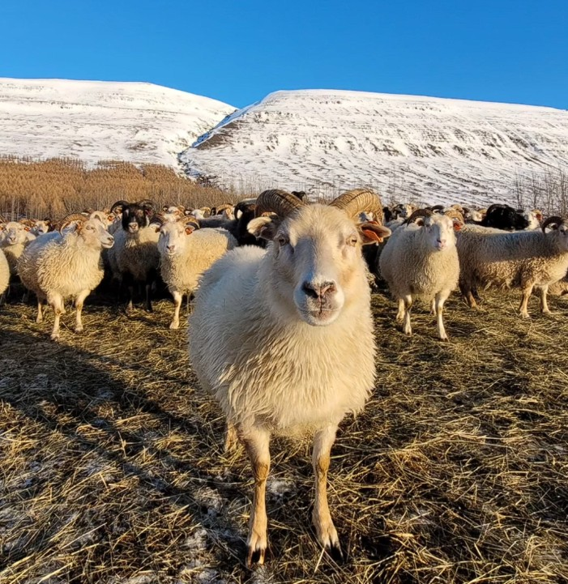

Hver er maðurinn?
Höfundur staddur í Englandi að skoða gott grjót
Sverrir Friðriksson, áður nefndur hér fyrir ofan, vinnur fyrir sér með sauðfjárrækt á bæ í Eyjafirði, og hefur gert óslitið frá aldamótum. Þar áður var hann í íslenskunámi við Háskóla Íslands, sem hefur nýst við þýðingar og önnur minniháttar verkefni.

Kalt, en það er allt í lagi, þær eru allar í peysu
Áhugamál!
| Áhugamál | Kunnátta | Þarf að auka/draga úr |
|---|---|---|
| Ljósmyndun | lítil | Þarf að auka, en... þarf ég ekki bara nýja myndavél??? |
| Kvikmynda- eða sjónvarpsgláp | Talsverð | draga úr |
| Forritun | Á uppleið | auka |
| Tölvuleikir | Óþarflega viðáttumikil | Dregst úr sjálfkrafa vegna aldurs |
| Skapandi skrif | of lítil | auka |
| CSS stíliseringar | of lítil | kemur í ljós þegar ég fæ einkunn fyrir þetta |